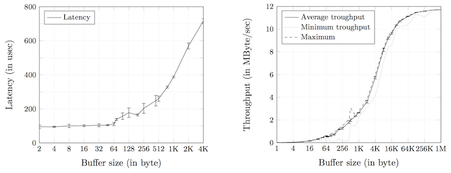
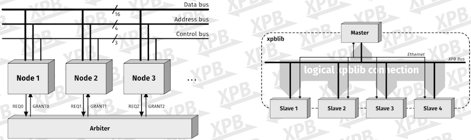
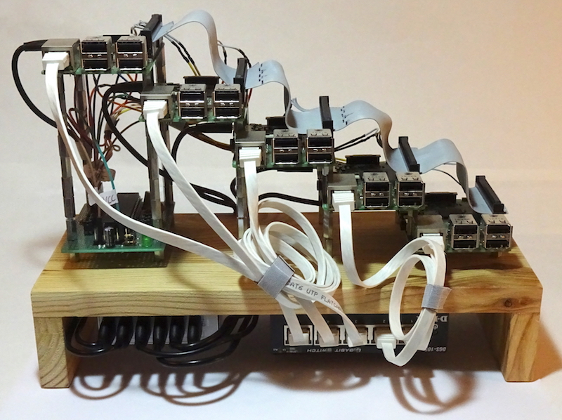
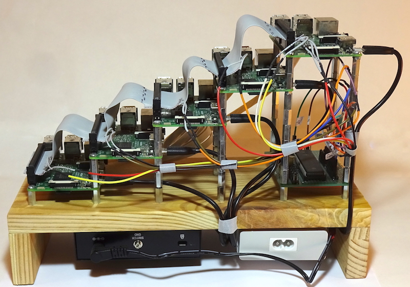
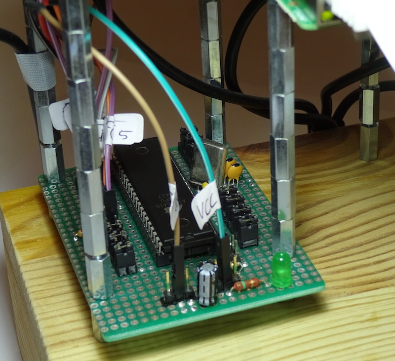

- Table of Contents
- Documents
- Visual impressions
- License
In 2012 the Raspberry Pi - a single-board credit card-sized computer - was launched. It aims on promoting the acquisition of skills in computer science for a broad audience. The most recent model features a powerful quad-core processor. By combining multiple single-board computers, a low-cost distributed computation cluster can be constructed. The nodes are then interconnected via standard FastEthernet. But for small (management) messages, which are often sent in a distributed computation, the latency of Ethernet is inadequate as the diagrams in figure one indicate.

Figure 1: The performance of Ethernet is poor for small buffer sizes.
The left diagram shows the latency (half RTT or single way) of a message for a given buffer size (aka. size of the data to send). Due to the byte padding of Ethernet the latency does not differ very much for sizes of up to 64 bytes. The right diagram displays the measured throughput (calculated from the latency and buffer size) wich shows an almost perfect behaviour: 11.72 MByte/s (of theoretical max. 12.5 MByte/s) are reached.
You might now think that if you use for example an ODROID - or any other single-board computer with Gigabit Ethernet - the problem is resolved since the Raspberry Pi only uses an FastEthernet controller. I thought the same and took a look at this topic at the end of my thesis in chapter five, page 113, figure 5.2. I compared the latency of Gigabit Ethernet against FastEthernet and came to the conclustion that they behave almost the same for small amounts of data. But as soon as the data gets bigger the latency for Gigabit Ethernet is much smaller as for FastEthernet, obviously.
With this problem discovered the topic of my thesis was now to evaluate if the GPIO pins of the single-board computer could be used to establish a data connection which transferrs the data much faster than Ethernet for small amounts of data. There are several obstacles which must be overcome:
- The GPIO pins cannot be switched very fast and interrupts triggered by the GPIO pins occure a long time after they physically happened (when using the GPIO memory mapped registers directly via C in the user space). See page 65, figure 3.13.
- The serial interfaces (SPI, UART, I2C) are all too slow and not suitable for the intended communication scheme: a multi-participant bus system (for example SPI and I2C are all master-slave oriented). The GPIOs are to slow for creating a custom serial protocol.
- It should be used as little external components as possible (requirement).
- The standard (Raspbian) Linux is not a realtime operating system. Therefore scheduling will soften any hard timing constraints which are necessary for any kind of data transmission protocol (which works asynchronously). Therefore means must be established to deal with the missing time reliability.
Therfore the thesis describes the design and implementation of a communication protocol - the eXtreme Parallel Bus (XPB) - which utilizes GPIO pins to create a synchronous and parallel 16-bit data bus. Because of the slow GPIO pins I implemented the XPB driver as a loadable kernel module (LKM) which creates a device file under /dev/xpb for communication. So I learned to write code for the Linux kernel.
Using the GPIO pins from within the kernel really speeds up the operation: for example it takes an average of 20 usec to arrive in the interrupt service routine after the edge on a GPIO pin was changed compared to around 200 usec from the user space application. So this step was really worth it.
The following figure two shows the architecture of the XPB bus and the additionally developed library to interface the kernel module and send data over the bus. The library has been developed and evaluated to perform the communication during distributed computations and combine the advantages of Ethernet and XPB: small amounts of data are transferred with the faster XPB bus and bigger amounts with standard Ethernet (hybrid method) to get the best performance.

Figure 2: Architecture of the XPB bus (left) and programming library (right). The XPB bus uses 25 GPIO pins to transmit data according to the XPB protocol. A central arbiter controls the bus access. The xpblib is a C user-space libray which utilizes the XPB bus and Ethernet (hybrid method) to transfer data. The library abstracts from physical connections to a single logical connection.
Empirical evaluations are finally carried out to compare the latency of developed XPB protocol against the latency of Ethernet to answer the question whether it is possible to use the GPIO pins, create a custom protocol and overcome the poor performance of Ethernet for small amounts of data (packages). Additionally the developed library xpblib has also been evaluated on a real distributed computation of the Mandelbrot set to see the behaviour of XPB in real applications. All evaluations and tests have been done on a small cluster or testbed of five Raspberry Pi Model 3 single-board computers. In a later section (here) some visual impressions of the cluster are given.
The final result is that XPB is able to overcome the performance of Ethernet for small amounts of data - for data sizes up to around 256 bytes. But since the architecture is a shared bus congestion arises if too many messages are send too quickly resulting in a performance drop. This drop obviously depends on the application of XPB.
But the target was to evaluate whether it is possible to establish a second communication way besides Ethernet. And this goal has been successfully reached with the presented XPB protocol.
The developed XPB protocol could also be useful for connecting Raspberry Pi Zeros (lack of Ethernet) and microcontrollers in general. Whether it is worth it depents totally on the application of XPB.
The thesis features also a chapter with a rough overview over the topic of distributed computation with is a little bit detached from the rest. This chapter presents the current state of the supercomputer section, with a look into the TOP500 list, explains some basics of distributed computing like Flynn's law and Moore's law and closes with an interesting case study on the InfiniBandTM communication environment for high-performance applications. InfiniBandTM can transmit data with up to 39 GByte per second (EDR with twelve channels). It is a really powerful communication mean.
Documents
In the following you can download the full thesis document (I corrected some typos). Please respect the terms and conditions under which I released this document. You can find them in the license section of this page (below).
Download the full thesis (PDF, 2.6 MB) SHA-1 42232f33e767be5535b3f05584c55b5444546634
- or alternatively click here to view it in the browser (new window).
The thesis has been created completely with LaTeX. For the (control) flow diagrams (e.g. see p. 53 / 54) I learned to used TikZ and PGF. The diagrams are created with PGFPlots. The only photos in this thesis are the photo of the testbed and of the arbitration unit. All other images are vector graphics.
If you want to link to this document you can download an »advertising« image here.
Visual impressions
The following figures three and four show the small testbed I built to test and develop XPB on. Figure five shows the final prototype of the arbitration unit for XPB which is based on the idea of the PCI arbitration unit (see page 49).

Figure 3: Front of the testbed. The five Raspberry Pi 3 Model B single-board computers are interconnected with a 40-pin ribbon cable (some connections NC) and are connected to the arbitration unit. They are also connected together via Ethernet and get power from an USB power supply with 2.4A per slot.

Figure 4: The backside shows that every Pi has two connections (REQ and GRANT) to the arbitration unit.

Figure 5: The arbitration unit mainly consists of an AVR microcontroller which watches the REQ line and GRANTs the bus to only one bus participant at any time. The schematic is shown on page 58 and an explanation of the arbitration unit is shown in section 3.3 (p. 57 following).
License
Important: The documents presented on this page, my Master's thesis and other related documents and images are not licensed under the terms of the BY-SA 4.0 license like the rest of this website.
I am the exclusive copyright owner of all the documents related to my Master's thesis presented on my page or otherwhere. This page, the information on it and my thesis document is released under the terms and conditions of the BY-NC-SA 4.0 license. That means that you can:
- Read the information, copy it, share it and link to it.
But you are not allowed to:
- To use, publish or sell it commercially.
- To remix, transform, or build upon the material and publish it.
In every case you must give appropriate credit to the author of the document (me). If you need more rights, want to use it or have any other question you might want to contact me.